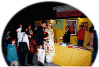

| L'amour en action |
et remise de cadeaux de Maître aux gens dans le besoin |
|  |
A Montréal, les initiés distribuent des cadeaux de Maître à ceux dans le besoin. |
[Montréal] Le 23 janvier une célébration pour le nouvel an lunaire a eu lieu au Palais des congrès de Montréal. Un stand a été monté par les initiés du centre de Montréal de l'Association internationale de Maître Suprême Ching Hai. Notre exposition a attiré l'attention de beaucoup de visiteurs qui ont regardé les cassettes vidéo qui étaient projetées sur deux grands écrans situés autour de notre stand.
Tout au long de la journée, nous avons discuté avec beaucoup de gens. Quelques-uns ont exprimé leur intérêt à devenir végétariens, d'autres souhaitaient écouter de la musique de Maître, et d'autres voulaient tout simplement admirer la beauté de Ses créations artistiques.
Nous avons aussi parlé à Monsieur Jacques Saada, un représentant du Premier ministre du Canada, un député libéral, et au commandant Masson, Chef policier du Montréal métropolitain. Ils ont tous les deux visité notre stand en compagnie de leurs épouses. Le chef policier a demandé à une soeur initiée qu'elle lui résume la Méthode pratique, alors que le député du Premier ministre a dit qu'il avait été particulièrement impressionné par la sérénité de nos regards, par nos yeux brillants. Il a ajouté qu'en fait, c'était la tranquillité qui émanait de notre stand qui l'avait attiré. Après nous avoir parlé, il a pris un dépliant et est parti en disant : " Vous me reverrez, c'est certain, aussitôt que mon emploi du temps me le permettra ! "
À 16h00, nous avons distribué les cadeaux du Nouvel an de Maître aux moins fortunés, plus particulièrement aux personnes âgées vivant seules et aux familles ayant plus de quatre enfants en bas âge. Les membres des communautés aulacienne, chinoise et occidentale en ont tous bénéficié. Lorsque ceux qui ont eu la chance de recevoir des cadeaux quittaient notre stand, leurs visages souriants étaient remplis de joie et de gaieté.
Dépenses pour la distribution de cadeaux et des manifestations du nouvel an lunaire 2000
Les cadeaux généreux de Maître aux moins chanceux de Montréal au Canada
| Description des articles | Montant | Reçu n° |
| Dépenses pour les stands d'exposition : location, panneaux d'affichage, électricité | 600,00 $CAN | A |
| Cadeaux aux personnes et familles dans le besoin : riz, gâteaux, sucreries, bonbons au lotus, thé, boissons | 1 415,61 $CAN | B |
| Serviettes, savons, dentifrice, brosses à dent, et autres articles de toilette | 691,27 $CAN | C |
| Assistance financière (enveloppes rouges avec l'argent surprise) | 1 200,00 $CAN | |
| Dépenses diverses : photocopies, cartes de nouvel an, photographies, sacs cadeau | 447,34 $CAN | D |
| Total des dépenses | 4 354,22 $CAN | |
| 3 002,91 $US | ||
| Don de Maître | 3 000,00 $US |